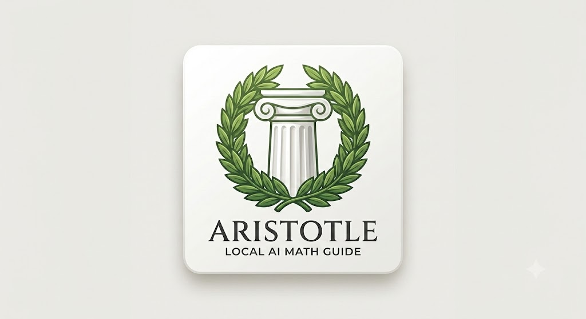

5<!DOCTYPE html>
<html lang="en">
<head>
    <meta charset="UTF-8">
    <meta name="viewport" content="width=device-width, initial-scale=1.0">
    <title>Project Aristotle</title>
    <link rel="manifest" href="manifest.json">

    <script src="https://cdn.jsdelivr.net/npm/onnxruntime-web/dist/ort.min.js"></script>
    <style>
        body {
            font-family: -apple-system, BlinkMacSystemFont, "Segoe UI", Roboto, Helvetica, Arial, sans-serif;
            background-color: #f5f5f7;
            color: #1d1d1f;
            margin: 0;
            padding: 20px;
            display: flex;
            flex-direction: column;
            align-items: center;
        }
        .container {
            max-width: 650px;
            width: 100%;
            background: #ffffff;
            border-radius: 12px;
            padding: 24px;
            box-shadow: 0 4px 12px rgba(0, 0, 0, 0.05);
            box-sizing: border-box;
        }
        header {
            text-align: center;
            margin-bottom: 24px;
        }
        .app-logo {
            width: 100px;
            height: 100px;
            border-radius: 20px;
            box-shadow: 0 4px 10px rgba(0, 0, 0, 0.1);
            margin-bottom: 12px;
            object-fit: cover;
        }
        h1 { margin: 0; font-size: 1.8rem; font-weight: 700; }
        .subtitle { margin: 4px 0 0 0; color: #86868b; font-size: 1rem; }
        .input-group { margin-bottom: 16px; }
        label { display: block; margin-bottom: 6px; font-weight: 600; font-size: 0.9rem; }
        textarea {
            width: 100%; height: 90px; padding: 12px;
            border: 1px solid #d2d2d7; border-radius: 8px;
            font-family: inherit; font-size: 1rem; resize: vertical; box-sizing: border-box;
        }
        button {
            width: 100%; padding: 12px; background-color: #0071e3; color: #ffffff;
            border: none; border-radius: 8px; font-size: 1rem; font-weight: 600;
            cursor: pointer; transition: background-color 0.2s ease;
        }
        button:hover { background-color: #0077ed; }
        button:disabled { background-color: #a1a1a6; cursor: not-allowed; }

        .dashboard {
            display: grid; grid-template-columns: repeat(3, 1fr); gap: 10px;
            margin: 16px 0; padding: 12px; background: #f5f5f7; border-radius: 8px;
        }
        .metric-card { text-align: center; }
        .metric-label { font-size: 0.75rem; color: #86868b; text-transform: uppercase; font-weight: 600; }
        .metric-value { font-size: 1.1rem; font-weight: 700; color: #1d1d1f; margin-top: 2px; }

        .output-box {
            margin-top: 12px; padding: 16px; background-color: #f5f5f7;
            border-left: 4px solid #0071e3; border-radius: 4px; min-height: 40px;
        }
        .history-panel {
            margin-top: 20px; padding-top: 16px; border-top: 1px solid #d2d2d7;
        }
        .history-item {
            font-size: 0.85rem; color: #515154; background: #fafafa;
            padding: 6px 12px; margin-top: 6px; border-radius: 4px; border: 1px solid #e5e5ea;
        }
        .status-badge {
            font-size: 0.8rem; font-weight: 600; color: #00802b;
            background-color: #e6f9ec; padding: 4px 12px; border-radius: 12px; display: inline-block;
        }
    </style>
</head>
<body>

    <div class="container">
        <header>
            
            <h1>Project Aristotle</h1>
            <p class="subtitle">Local AI Math Guide</p>
            <div style="margin-top: 8px;"><span class="status-badge">Rule-Based Engine Active</span></div>
        </header>

        <section class="dashboard">
            <div class="metric-card">
                <div class="metric-label">Inference Latency</div>
                <div class="metric-value" id="bench-latency">--</div>
            </div>
            <div class="metric-card">
                <div class="metric-label">RAM Allocation</div>
                <div class="metric-value" id="bench-ram">--</div>
            </div>
            <div class="metric-card">
                <div class="metric-label">Execution Mode</div>
                <div class="metric-value" id="bench-mode" style="color: #0071e3;">--</div>
            </div>
        </section>

        <main>
            <div class="input-group">
                <label for="proof-input">Enter your mathematical deduction step:</label>
                <textarea id="proof-input" placeholder="e.g., If x is even, then x = 2k for some integer k..."></textarea>
            </div>

            <button id="verify-btn">Verify Logic Step</button>

            <div class="input-group" style="margin-top: 16px;">
                <label>Aristotle Guidance Output:</label>
                <div id="guidance-output" class="output-box" aria-live="polite">Awaiting your deduction sequence...</div>
            </div>

            <div class="history-panel">
                <label>Active Proof Chain History:</label>
                <div id="history-log">
                    <div style="font-style: italic; color:#86868b; font-size:0.85rem; padding-top:4px;">No steps recorded yet.</div>
                </div>
            </div>
        </main>
    </div>

    <    <script type="module">
        import { AristotleEngine } from './aristotle.js';

        const engine = new AristotleEngine();
        const btn = document.getElementById('verify-btn');
        const inputField = document.getElementById('proof-input');
        const outputBox = document.getElementById('guidance-output');
        const historyLog = document.getElementById('history-log');
        const statusBadge = document.querySelector('.status-badge');

        const latMetric = document.getElementById('bench-latency');
        const ramMetric = document.getElementById('bench-ram');
        const modeMetric = document.getElementById('bench-mode');

        // 1. Initialize Engine on load
        window.addEventListener('load', async () => {
            btn.disabled = true;
            statusBadge.innerText = "Engine: Loading...";
            
            await engine.initialize();
            
            if (engine.isReady) {
                statusBadge.innerText = "Engine: Ready";
                statusBadge.style.backgroundColor = "#e6f9ec";
                statusBadge.style.color = "#00802b";
                btn.disabled = false;
            } else {
                statusBadge.innerText = "Engine: Failed";
                statusBadge.style.backgroundColor = "#ffe6e6";
                statusBadge.style.color = "#cc0000";
            }
        });

        // 2. Handle Verification Logic
        btn.addEventListener('click', async () => {
            const userText = inputField.value.trim();
            if (!userText || !engine.isReady) return;

            btn.disabled = true;
            outputBox.innerText = "Analyzing logic...";

            // Get template feedback
            const response = engine.processInput(userText);
            
            // Perform Neural Inference
            const mockTokens = Array.from(userText).map(char => char.charCodeAt(0));
            const metrics = await engine.evaluateProofStep(mockTokens, mockTokens.length);

            // Update UI with real model feedback
            latMetric.innerText = metrics.latency ? `${metrics.latency} ms` : "--";
            ramMetric.innerText = metrics.memoryEstimate || "--";
            
            modeMetric.innerText = metrics.isValid ? "Valid" : "Check Logic";
            modeMetric.style.color = metrics.isValid ? "#00802b" : "#d9534f";

            outputBox.innerText = response + (metrics.isValid ? " (Verified)" : " (Refinement suggested)");
            inputField.value = '';
            btn.disabled = false;

            // Update History
            if (engine.history.length === 1) historyLog.innerHTML = '';
            const item = document.createElement('div');
            item.className = 'history-item';
            item.innerText = `Step ${engine.history.length}: ${userText}`;
            historyLog.appendChild(item);
        });

        // Service Worker registration
        if ('serviceWorker' in navigator) {
            navigator.serviceWorker.register('./sw.js').catch(console.error);
        }
    </script>
body>
</html>
            
